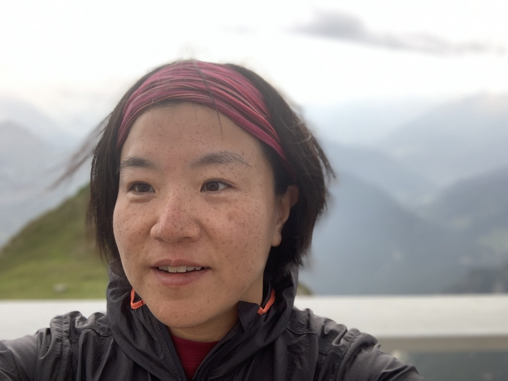

| |
 | Since January 2024, I am an associate professor at
School of Computing, KAIST. I am also a member of Discrete Mathematics Group, Institute for Basic Science (IBS)Contact
|
| I obtained the master's degree in industrial engineering at KAIST,
South Korea and PhD degree in computer
science at Royal Holloway,
University of London in UK, 2010. I was a postdoc at Project Team ALGCo, CNRS-LIRMM in 2010-2011. From 2011 October till December 2023, I was a CNRS researcher (chargé de recherche), hosted at LAMSADE, from which I am taking a temporary leave. Research Interests
Research Grant
PublicationsA tight meta-theorem for LOCAL certification of MSO2 properties within bounded treewidth graphs, To appear in the 44th ACM Symposium on Principles of Distributed Computing (PODC 2025). Recognisability Equals Definability for Finitely Representable Matroids of Bounded Path-Width, To appear in the 40th Annual ACM/IEEE Symposium on Logic in Computer Science (LICS 2025). CMSO-transducing tree-like graph decompositions, In the 42th International Symposium on Theoretical Aspects of Computer Science (STACS 2025). Shallow vertex minors, stability, and dependence, Innovations in Graph Theory (1), pp. 87-112 (2024). On weighted graph separation problems and flow-augmentation, In SIAM Journal on Discrete Mathematics (38-1), pp. 170-189 (2024). Bandwidth Parameterized by Cluster Vertex Deletion Number, conference version: In the International Symposium on Parameterized and Exact Computation (IPEC 2023). journal version: to appear in Algorithmica (2025). Flow-augmentation III: complexity dichotomy for Boolean CSPs parameterized by the number of unsatisfied constraints, arxiv In the proceedings of the ACM-SIAM Symposium on Discrete Algorithms (SODA 2023). Twin-width VIII: delineation and win-wins, arxiv The proceedings of the International Symposium on Parameterized and Exact Computation (IPEC 2022). Directed flow-augmentation, arxiv conference version: The proceedings of the 54th Annual ACM Symposium on Theory of Computing (STOC 2022). journal version: Flow-augmentation I: Directed graphs, Journal of the ACM 72 (1), pp.1-38 (2025). Obstructions for matroids of path-width at most k and graphs of linear rank-width at most k, arxiv conference version: the proceedings of the International Symposium on Theoretical Aspects of Computer Science (STACS 2022) journal version: Journal of Combinatorial Theory B 160, pp.15-35 (2023) Twin-width VI: the lens of contraction sequences,arxiv In the proceedings of the ACM-SIAM Symposium on Discrete Algorithms (SODA 2022) Twin-width and polynomial kernels, arxiv conference version: the proceedings of the International Symposium on Parameterized and Exact Computation (IPEC 2021). A Constant-factor Approximation for Weighted Bond Cover, arxiv In the proceedings of the International Conference on Approximation Algorithms for Combinatorial Optimization Problems (APPROX/RANDOM 2021). Complexity and algorithms for constant diameter augmentation problems arxiv Theoretical Computer Science, 2021. On the tree-width of even-hole-free graphs, arxiv European Journal of Combinatorics, 2021. Twin-width III: Max Independent Set and Coloring In the proceedings of the International Colloquium on Automata, Languages and Programming (ICALP 2021) arxiv Solving hard cut problems via flow-augmentation conference version: In the proceedings of the ACM-SIAM Symposium on Discrete Algorithms (SODA 2021) arxiv journal version: To appear in ACM Transactions on Algorithms. Twin-width II: small classes conference version: the proceedings of the ACM-SIAM Symposium on Discrete Algorithms (SODA 2021) arxiv journal version: Combinatorial Theory 2 (2), 2022. Twin-width I: tractable FO model checking arxiv. conference version: the proceedings of the 61st Annual IEEE Symposium on Foundations of Computer Science (FOCS 2020) journal version: Journal of ACM ACM 69 (1), pp.1-46 (2022). Towards constant-factor approximation for chordal / distance-hereditary vertex deletion arxiv. conference version: the proceedings of the 31st International Symposium on Algorithms and Computation (ISAAC 2020) journal version: Algorithmica 84 (7), pp. 2106-2133 (2022). Grundy Distinguishes Treewidth from Pathwidth conference version: the proceeding of the European Symposium on Algorithms (ESA 2020) arxiv. journal version: SIAM Journal on Discrete Mathematics 36 (3), 2022. Grundy Coloring & friends, Half-Graphs, Bicliques arxiv. conference version: the proceeding of the 37th International Symposium on Theoretical Aspects of Computer Science (STACS 2020) journal version: Algorithmica 85, pp. 1-28 (2023). Token Sliding on Split Graphs conference version: the proceeding of the 36th International Symposium on Theoretical Aspects of Computer Science (STACS 2019) journal version: Theory of Computing Systems, 2020. arxiv Data-compression for Parametrized Counting Problems on Sparse graphs conference version: the proceedings of the 29th International Symposium on Algorithms and Computation (ISAAC 2018) arxiv Weighted Counting for Constraint Satisfaction with Default Values: Algorithms and Complexity Results conference version: the proceedings of the 30th International Conference on Tools with Artificial Intelligence (ICTAI 2018) journal version ("Sum-of-Products with Default Values: Algorithms and Complexity Results"): Journal of Artificial Intelligence Research (JAIR) 73, pp. 535-552, 2020. New Results on Directed Edge Dominating Set conference version: the proceedings of the 43rd International Symposium on Mathematical Foundations of Computer Science (MFCS 2018) arxiv conference version: the proceedings of the 45th International Colloquium on Automata, Languages and Programming (ICALP 2018) arxiv journal version: SIAM Journal on Discrete Mathematics (SIDMA), 2021 QPTAS and Subexponential Algorithm for Maximum Clique on Disk Graphs conference version: the proceedings of the International Symposium on Computational Geometry (SoCG 2018) arxiv journal version: expanded paper "EPTAS and Subexponential Algorithm for Maximum Clique on Disk and Unit Ball Graphs" additionally with Marthe Bonamy, Nicolas Bousquet, Pierre Charbit, Stéphan Thomassé: Journal of the ACM (2020) conference version: the proceedings of the ACM-SIAM Symposium on Discrete Algorithms (SODA 2018) journal version: Journal of Combinatorial Theory B, 2020. arxiv conference version: the proceedings of the Workshop on Algorithms and Data Structures (WADS 2017) arxiv journal version: Algorithmica (2021) conference version: the proceedings of the ACM-SIAM Symposium on Discrete Algorithms (SODA 2016) arxiv journal version: IEEE Trans. Information Theory 63(11): 7178-7205 (2017) Parameterized Algorithms for Min-Max Multiway Cut and List Digraph Homomorphism conference version: the proceedings of the 10th International Symposium on Parameterized and Exact Computation (IPEC 2015) arxiv journal version: Comput. Syst. Sci. 86: 191-206 (2017) Complexity and Approximability for Parameterized CSPs conference version: Proceedings of the 10th International Symposium on Parameterized and Exact Computation (IPEC 2015) arxiv journal version: Algorithmica 79(1): 230-250 (2017) conference version: Proceedings of the 10th International Symposium on Parameterized and Exact Computation (IPEC 2015). arxiv journal version: Algorithmica 79(1): 251-270 (2017) An FPT algorithm and a polynomial kernel for Linear Rankwidth One Vertex Deletion conference version: Proceedings of the 10th International Symposium on Parameterized and Exact Computation (IPEC 2015). arxiv journal version: Algorithmica 79(1): 66-95 (2017) An FPT 2-Approximation for Tree-Cut Decomposition conference version: Proceedings of 13th Workshop on Approximation and Online Algorithms (WAOA 2015). arxiv journal version: Algorithmica 80 (1): 116--135 (2018) Proceedings of the 40th Mathematical Foundations of Computer Science (MFCS 2015) Proceedings of the 41st International Workshop on Graph-Theoretic Concepts in Computer Science (WG 2015). arxiv conference version: Proceedings of the 21st International Computing and Combinatorics Conference (COCOON 2015). arxiv journal version: Discrete Applied Mathematics 2018. A Polynomial-time Algorithm for Outerplanar Diameter Improvement, conference version: the Proceedings of the 10th International Computer Science Symposium in Russia (CSR 2015). arxiv journal version: J. Comput. Syst. Sci. 89: 315-327 (2017) Satisfying More Than Half Linear Equations Over F2: A multivariate approach Journal of Computer and System Sciences. 80 (4), pp. 687-696, 2014. arxiv conference version: Proceedings of the 8th International Symposium on Parameterized and Exact Computation (IPEC 2013). arxiv journal version: Algorithmica 71 (3), pp. 541-656, 2015. The Complexity of Repairing, Adjusting, and Aggregating of Extensions in Abstract Argumentation, Proceedings of the 2nd International Workshop on Theory and Applications of Formal Argumentation (TAFA 2013). Linear kernels and single-exponential algorithms via protrusion decompositions, conference version: Proceedings of the 40th International Colloquium on Automata, Languages and Programming (ICALP 2013). arxiv journal version: ACM Transactions on Algorithms (TALG) 12 (2), 2016. Theoretical Computer Science. 511, pp. 109-116, 2013. arxiv Proceedings of the 4th International Conference on Computational Models of Argument (COMMA 2012) pdf conference version: Proceedings of the 13th Scandinavian Symposium and Workshops on Algorithm Theory (SWAT 2012). arxiv journal version: Journal of Computer and System Sciences 81 (1), pp. 186-207, 2015. Proceedings of the 26th AAAI Conference on Artificial Intelligence (AAAI-12). arxiv Proceedings of the 6th International Symposium on Parameterized and Exact Computation (IPEC 2011). arxiv Theory of Computing Systems 48 (2), pp. 402-410, 2011. arxiv conference version: the 5th International Symposium on Parameterized and Exact Computation (IPEC 2010). pdf journal version: Algorithmica 64 (1), pp. 112-125, 2012. conference version: the 3rd International Conference on Computational Models of Argument (COMMA 2010). journal version: Artificial Intelligence 175 (9--10), pp. 1722-1736, 2011. arxiv Journal of Computer and System Sciences 76 (8), pp. 872--878, 2010. arxiv Proceedings of the 12th Scandinavian Symposium and Workshops on Algorithm Theory (SWAT 2010). arxiv conference version: the 21st Annual ACM-SIAM Symposium on Discrete Algorithms (SODA 2010). journal version: Algorithmica 61 (3), pp. 638-655, 2011. arxiv Journal of Computer and System Sciences 76 (2), pp. 144-152, 2010. arxiv Australasian Journal of Combinatorics 46, pp. 217-232, 2010. arxiv Discrete Applied Mathematics 158 (4), pp. 319-330, 2010. arxiv conference version: Proceedings of the 4th International Workshop on Parameterized and Exact Computation (IWPEC 2009). arxiv journal version: Journal of Computer and System Sciences 77 (2). pp. 422-429, 2011. conference version: Proceedings of the 15th International Computing and Combinatorics Conference (COCOON 2009). pdf journal version: Journal of Computer and System Sciences 76 (7), pp. 650-662, 2010. Discrete Applied Mathematics 157 (13), pp. 3000-3004, 2009. arxiv conference version: Proceedings of the 4th International Conference on Algorithmic Aspects in Information and Management (AAIM 2008). journal version: Theoretical Computer Science 410 (45), pp. 4571-4579, 2009. arxiv Proceedings of the 2nd Annual International Conference on Combinatorial Optimization and Applications (COCOA 2008). pdf LNCS Proceedings of the conference honoring Martin Golumbic's 60th birthday, 2008. Lecture Notes of Ramanujan Mathematical Society 7, pp. 25-37, 2008. preprint-pdf Thesis
Teaching
--> Last update: 18 April 2025 |